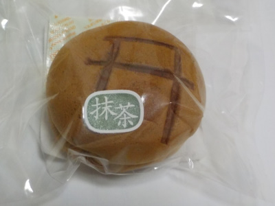

ペパーミントの抹茶どら焼き
2019/05/25

元乃隅神社の売店にありました。
鳥居がついてるので行った記念に丁度いいと思って買いました。
ちっちゃくてふっくらしたどら焼きです。 生地に卵が入ってて、和菓子風なふこふこした食感と甘さがありました。
普通のどら焼きと違うんですが、美味しかったのでこうゆうのもいいなとおもいました。 山口県長門市油谷伊上4418-1
山口県長門市油谷伊上4418-1
2019/05/25

元乃隅神社の売店にありました。
鳥居がついてるので行った記念に丁度いいと思って買いました。
ちっちゃくてふっくらしたどら焼きです。 生地に卵が入ってて、和菓子風なふこふこした食感と甘さがありました。
普通のどら焼きと違うんですが、美味しかったのでこうゆうのもいいなとおもいました。 山口県長門市油谷伊上4418-1
関連施設
【元乃隅神社】